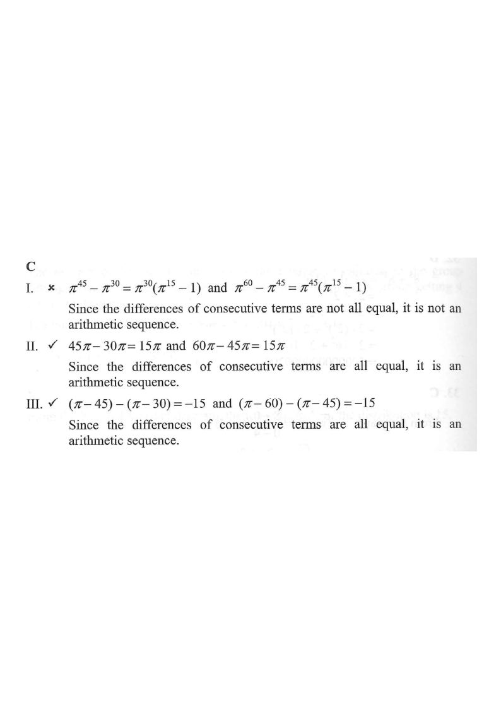

5. Formulas and Sequences • Arithmetic Sequences
Step 1 — Given information: examine each sequence I, II, III.
Which of the following are arithmetic sequences?

A sequence is arithmetic if the difference of consecutive terms $d = T_{n+1}-T_n$ is the same for every pair of consecutive terms. We test each sequence's common difference.
Key test: $T_2-T_1 \;=\; T_3-T_2$ ?$$T_2-T_1=\pi^{45}-\pi^{30}=\pi^{30}(\pi^{15}-1)$$ $$T_3-T_2=\pi^{60}-\pi^{45}=\pi^{45}(\pi^{15}-1)$$
Since $\pi^{30}(\pi^{15}-1)\neq \pi^{45}(\pi^{15}-1)$ (the factor $\pi^{15}\neq 1$), the differences are not equal.
✗Sequence I is not arithmetic — it is geometric with common ratio $\pi^{15}$.
Because the terms grow by a fixed multiplier, the differences grow too.$$T_2-T_1 = 45\pi - 30\pi = 15\pi$$ $$T_3-T_2 = 60\pi - 45\pi = 15\pi$$
The two differences are equal ($d=15\pi$).
✓Sequence II is arithmetic.
Constant common difference $d = 15\pi$.$$(\pi-45)-(\pi-30) = -15$$ $$(\pi-60)-(\pi-45) = -15$$
The two differences are equal ($d=-15$).
✓Sequence III is arithmetic.
Constant common difference $d = -15$ (subtracting 15 each time).Only sequences II and III are arithmetic.
Among the options, this corresponds to C. II and III only.
I fails, II and III pass → option C.